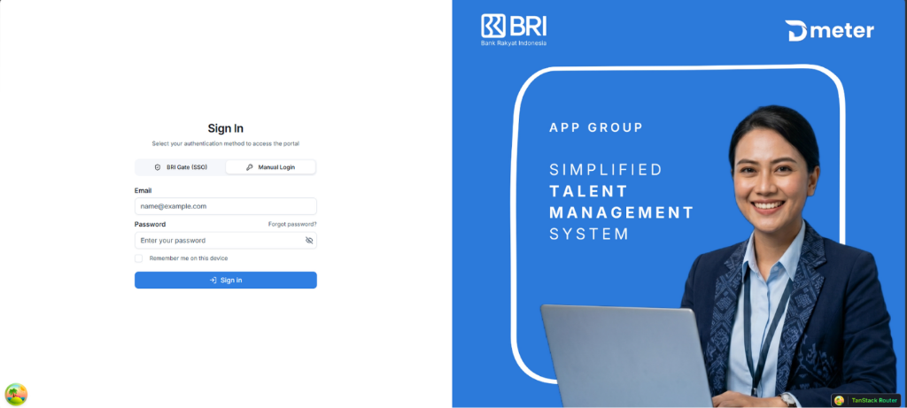

★ Star Featured Project
Professional
Experience

Internal human capital management backend service handling employee lifecycle workflows, automated compliance logging, and enterprise reporting.
My Contribution:
Designed modular REST endpoints in Go with Chi Router, optimized relational queries reducing latency by ~35%, and wrote unit tests covering critical auth logic.
Golang
Chi Router
PostgreSQL
Docker
SonarQube
Unit Testing